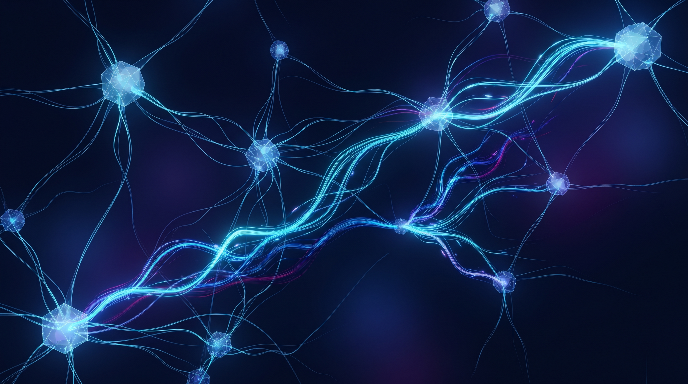
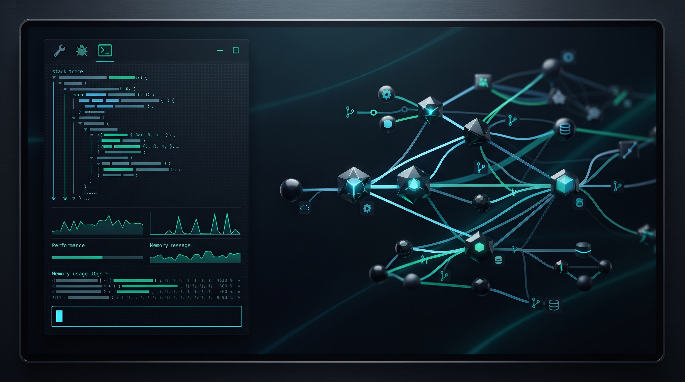

從「純文字對話接龍」到「具備感知、思考、工具與自省能力」的自主智慧代理人架構演進史。

傳統大型語言模型（LLM）本質是高維度機率接龍，宛如「被關在房間裡的智者」。
任何具備自主能動性的代理人系統，均建立在這四項能力的有機閉環上。
將模型的動作空間擴展為 $\mathcal{A}_{\text{ReAct}} = \mathcal{A}_{\text{action}} \cup \mathcal{A}_{\text{thought}}$，奠定現代代理人執行骨幹。
擺脫提示詞工程，透過自監督 Loss 增益將工具調用能力內化至神經網絡權重。
| 模型架構 | 參數規模 | 準確率 |
|---|---|---|
| GPT-3 (text-davinci-002) | 175B | 37.8% |
| GPT-J (基礎底模) | 6.7B | 19.3% |
| Toolformer (自主調用計算機) | 6.7B | 42.1% (超越 175B) |
以自然語言診斷取代數值獎勵，在不更新模型參數的情況下實現迭代自我除錯。
史丹佛虛擬小鎮：結合時效衰減、重要性權重與反思抽象的計算認知架構。
走出單函數測試玩具環境，評測 Agent 在大型 GitHub 倉庫中自主定位並修復 Issue 的能力。

Agent 不是來取代人類思考的，而是作為人類智能的高階外包與認知延伸。
本教學簡報直接編譯自本地 Wiki 知識庫，所有概念、數據與演算法均可回溯至對應的筆記與原始文獻。